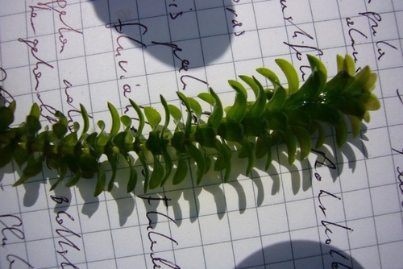
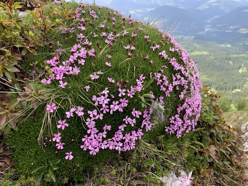
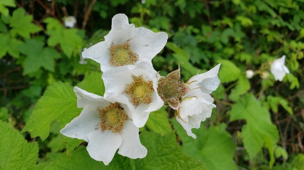

White flowers
Grasses and sedges are grouped separately: they are wind-pollinated, so what you see is the seed head.
72 plants
 Drepanostoma, nekatere pravice pridžane (CC BY), naložena od Drepanostoma") Alpine Rock JasmineAndrosace chamaejasme
Alpine Rock JasmineAndrosace chamaejasme Rob Foster, some rights reserved (CC BY), uploaded by Rob Foster") Arum-leaved ArrowheadSagittaria cuneataBastard ToadflaxComandra umbellata
Arum-leaved ArrowheadSagittaria cuneataBastard ToadflaxComandra umbellata Matt Lavin, some rights reserved (CC BY)") Big SagebrushArtemisia tridentata
Big SagebrushArtemisia tridentata Eugene Popov, some rights reserved (CC BY), uploaded by Eugene Popov") Birch-leaved SpireaSpiraea betulifoliaBlack HawthornCrataegus douglasii
Birch-leaved SpireaSpiraea betulifoliaBlack HawthornCrataegus douglasii Boreal YarrowAchillea borealis
Boreal YarrowAchillea borealis Broad-leaved ArrowheadSagittaria latifoliaBroad-leaved Water-plantainAlisma triviale
Broad-leaved ArrowheadSagittaria latifoliaBroad-leaved Water-plantainAlisma triviale Michael J. Papay, some rights reserved (CC BY), uploaded by Michael J. Papay") BuckbeanMenyanthes trifoliataBunchberryCornus canadensis
BuckbeanMenyanthes trifoliataBunchberryCornus canadensis Dendroica cerulea, some rights reserved (CC BY)") Canada AnemoneAnemonastrum canadense
Canada AnemoneAnemonastrum canadense
Canada WaterweedElodea canadensis Douglas Goldman, some rights reserved (CC BY-SA), uploaded by Douglas Goldman") ChokecherryPrunus virginiana
ChokecherryPrunus virginiana Andre Hosper, some rights reserved (CC BY), uploaded by Andre Hosper") Common BladderwortUtricularia vulgarisCommon Mare's-tailHippuris vulgarisCut-leaved AnemoneAnemone multifida
Common BladderwortUtricularia vulgarisCommon Mare's-tailHippuris vulgarisCut-leaved AnemoneAnemone multifida aarongunnar, some rights reserved (CC BY), uploaded by aarongunnar") DewberryRubus pubescens
DewberryRubus pubescens abogomazova, some rights reserved (CC BY), uploaded by abogomazova") Dwarf RaspberryRubus arcticus
Dwarf RaspberryRubus arcticus Don Loarie, some rights reserved (CC BY), uploaded by Don Loarie") False Solomon's SealMaianthemum racemosum
False Solomon's SealMaianthemum racemosum Alex Abair, some rights reserved (CC BY), uploaded by Alex Abair") Field ChickweedCerastium arvense
Field ChickweedCerastium arvense Alexis Williams, some rights reserved (CC BY), uploaded by Alexis Williams") Field PussytoesAntennaria neglecta
Field PussytoesAntennaria neglecta Michael J. Papay, some rights reserved (CC BY), uploaded by Michael J. Papay") Flat-topped White AsterDoellingeria umbellataGiant Bur-reedSparganium eurycarpum
Flat-topped White AsterDoellingeria umbellataGiant Bur-reedSparganium eurycarpum Tom Norton, some rights reserved (CC BY), uploaded by Tom Norton") Highbush CranberryViburnum opulus
Highbush CranberryViburnum opulus Hooded Ladies' TressesSpiranthes romanzoffianaIvy-leaved DuckweedLemna trisulca
Hooded Ladies' TressesSpiranthes romanzoffianaIvy-leaved DuckweedLemna trisulca Joe-Pye WeedEutrochium maculatumLabrador TeaLedum groenlandicum
Joe-Pye WeedEutrochium maculatumLabrador TeaLedum groenlandicum Dustin Snider, some rights reserved (CC BY), uploaded by Dustin Snider") Long-fruited AnemoneAnemone cylindrica
Long-fruited AnemoneAnemone cylindrica psweet, some rights reserved (CC BY-SA), uploaded by psweet") Low-bush CranberryViburnum eduleMany-flowered Aster (Tufted White Prairie Aster)Symphyotrichum ericoides
Low-bush CranberryViburnum eduleMany-flowered Aster (Tufted White Prairie Aster)Symphyotrichum ericoides Sarah Johnson, some rights reserved (CC BY), uploaded by Sarah Johnson") MeadowsweetSpiraea alba
MeadowsweetSpiraea alba
Moss CampionSilene acaulis Douglas Goldman, some rights reserved (CC BY-SA), uploaded by Douglas Goldman") Northern BedstrawGalium boreale
Northern BedstrawGalium boreale Tom Norton, some rights reserved (CC BY), uploaded by Tom Norton") Pearly EverlastingAnaphalis margaritacea
Pearly EverlastingAnaphalis margaritacea Tom Norton, some rights reserved (CC BY), uploaded by Tom Norton") Pin CherryPrunus pensylvanicaPink Spirea (Rose Meadowsweet)Spiraea alba var. latifolia
Pin CherryPrunus pensylvanicaPink Spirea (Rose Meadowsweet)Spiraea alba var. latifolia Matt Lavin, some rights reserved (CC BY-SA)") Plains WormwoodArtemisia campestrisPrairie SagewortArtemisia frigida
Plains WormwoodArtemisia campestrisPrairie SagewortArtemisia frigida Brian Finzel, some rights reserved (CC BY-SA), uploaded by Brian Finzel") Red BaneberryActaea rubra
Red BaneberryActaea rubra giantcicada, some rights reserved (CC BY), uploaded by giantcicada") Red Osier DogwoodCornus sericea
Red Osier DogwoodCornus sericea Rosy Pussytoes (Littleleaf Pussytoes)Antennaria microphylla
Rosy Pussytoes (Littleleaf Pussytoes)Antennaria microphylla Igor Balashov, some rights reserved (CC BY), uploaded by Igor Balashov") Sago PondweedStuckenia pectinata
Sago PondweedStuckenia pectinata Sam Kieschnick, some rights reserved (CC BY), uploaded by Sam Kieschnick") Saskatoon BerryAmelanchier alnifolia
Saskatoon BerryAmelanchier alnifolia Matt Berger, some rights reserved (CC BY), uploaded by Matt Berger") Showy PussytoesAntennaria pulcherrima
Showy PussytoesAntennaria pulcherrima Matt Lavin, some rights reserved (CC BY-SA)") Silver SagebrushArtemisia cana
Silver SagebrushArtemisia cana pfly, some rights reserved (CC BY-SA)") Sitka ValerianValeriana sitchensisSmall Bottle SedgeCarex utriculataSmall-leaved Everlasting (Small-leaved Pussytoes)Antennaria parvifolia
Sitka ValerianValeriana sitchensisSmall Bottle SedgeCarex utriculataSmall-leaved Everlasting (Small-leaved Pussytoes)Antennaria parvifolia Douglas Goldman, some rights reserved (CC BY-SA), uploaded by Douglas Goldman") Smooth Sweet CicelyOsmorhiza longistylis
Smooth Sweet CicelyOsmorhiza longistylis Douglas Goldman, some rights reserved (CC BY-SA), uploaded by Douglas Goldman") Soapweed YuccaYucca glauca
Soapweed YuccaYucca glauca Spiked Water-milfoilMyriophyllum sibiricum
Spiked Water-milfoilMyriophyllum sibiricum Sweet-scented BedstrawGalium triflorum
Sweet-scented BedstrawGalium triflorum Zihao Wang, some rights reserved (CC BY), uploaded by Zihao Wang") Tall Anemone (Thimbleweed)Anemone virginiana
Tall Anemone (Thimbleweed)Anemone virginiana Eric Lamb, some rights reserved (CC BY), uploaded by Eric Lamb") Tall Showy YarrowAchillea alpina
Tall Showy YarrowAchillea alpina
ThimbleberryRubus parviflorusTrailing RaspberryRubus pedatus Douglas Goldman, some rights reserved (CC BY-SA), uploaded by Douglas Goldman") Water Arum (Wild Calla)Calla palustrisWater ParsnipSium suave
Water Arum (Wild Calla)Calla palustrisWater ParsnipSium suave Western Mountain AshSorbus scopulina
Western Mountain AshSorbus scopulina marlin harms, some rights reserved (CC BY)") White CamasAnticlea elegansWhite Evening PrimroseOenothera nuttallii
White CamasAnticlea elegansWhite Evening PrimroseOenothera nuttallii White GeraniumGeranium richardsonii
White GeraniumGeranium richardsonii Logan J.L. Bradley, some rights reserved (CC BY), uploaded by Logan J.L. Bradley") White Mountain AvensDryas hookerianaWhite Prairie AsterSymphyotrichum falcatum
White Mountain AvensDryas hookerianaWhite Prairie AsterSymphyotrichum falcatum Esben Kjaer, some rights reserved (CC BY), uploaded by Esben Kjaer") White Prairie CloverDalea candida
White Prairie CloverDalea candida Wild Lily-of-the-valleyMaianthemum canadense
Wild Lily-of-the-valleyMaianthemum canadense Ole Husby, some rights reserved (CC BY-SA)") Wild RaspberryRubus idaeus
Wild RaspberryRubus idaeus Abby Hyde, some rights reserved (CC BY), uploaded by Abby Hyde") Wild StrawberryFragaria virginiana
Wild StrawberryFragaria virginiana Douglas Goldman, some rights reserved (CC BY-SA), uploaded by Douglas Goldman") Woodland StrawberryFragaria vesca
Woodland StrawberryFragaria vesca Douglas Goldman, some rights reserved (CC BY-SA), uploaded by Douglas Goldman") YarrowAchillea millefolium
YarrowAchillea millefolium